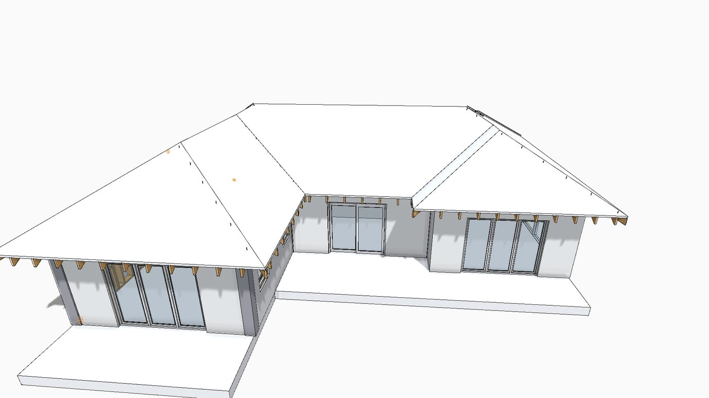
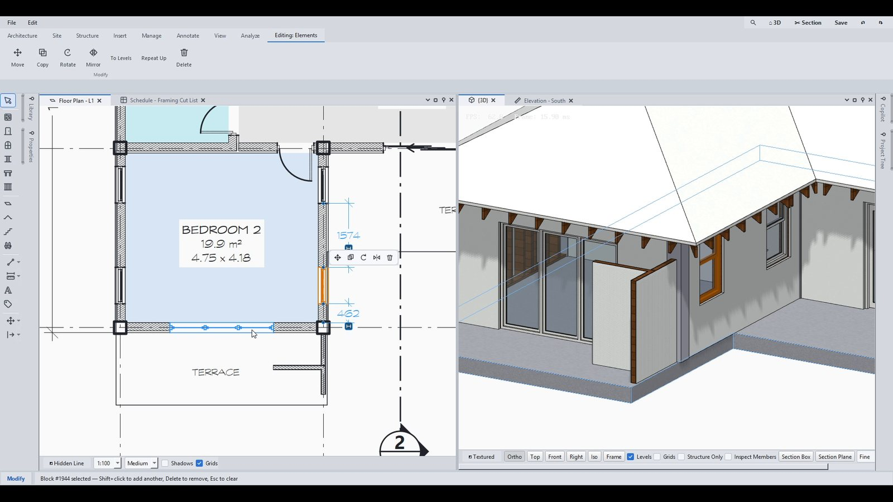
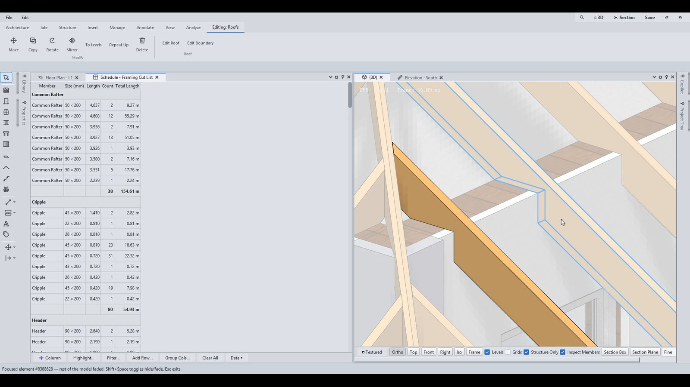
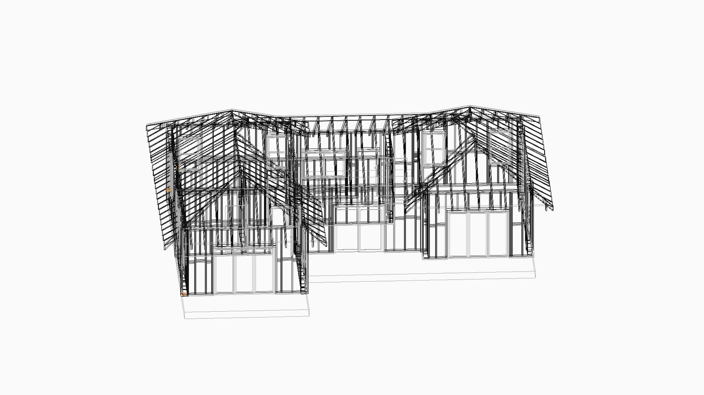

Northsill is a BIM application for architects. You model the building once — and the drawing set is derived from it: plans, elevations, sections, schedules, sheets. Change the model and every view follows, because there is nothing to keep in step by hand.
Walls that know their layers. Doors and windows that cut them properly. Floors, roofs, stairs, railings, columns, beams and footings — modelled as what they are, not as shapes that look right in one view.

The plan, the elevation and the section are computed from the one model — exactly, every time. Annotate them the way you always have, put them on sheets with your titleblock, and export the set.

Schedules and cut lists are counted from the model, so they are never a separate exercise and never out of date. Change the design and the numbers change with it.

The model carries the frame, not a pattern drawn over it. A birdsmouth exists because the roof bears on a plate and the plate is referenced to the rafter — so change the pitch and every member re-cuts itself.

Northsill is in development and this page will not pretend otherwise. If you are going to put a project through it, you should know what it does not do yet.
.nsl fileThe beta is a full build — nothing is held back behind a paywall or a watermark on your drawings. It runs entirely on your own machine: no account, no cloud, no project of yours leaves the computer. Install it, open one of your own buildings, and tell me what breaks.
Windows will warn you when you run it. The installer is not code-signed yet — a certificate costs money that has gone into the software instead. You will see “Windows protected your PC”; click More info → Run anyway. If that is not a trade you are willing to make, that is a fair call — write to me and I will show you the app on a call instead.
Test builds stop running after 60 days. That is not a sales tactic — it is how I make sure nobody is quietly reporting bugs against a build from four months ago. Come back here for the current one; your .nsl files keep working.
Written when the build was cut, read straight from the release — so this page and the release itself cannot drift apart.